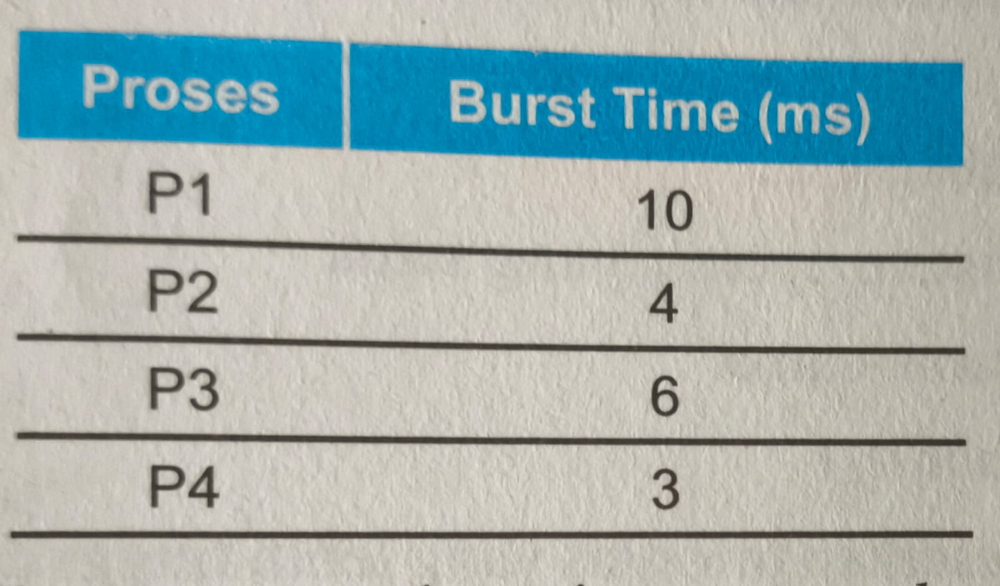

a. Program sistem untuk menginput dan
mencetak data ke printer
b. Lapisan antara prosesor dan
perangkat keras
c. User interface antara pengguna
dengan software komputer
d. Manajer sumber daya komputer yang
mengatur alokasi ke program dan pengguna
d. Manajer sumber daya komputer yang mengatur alokasi ke program dan
pengguna.
2.
Tugas dari resource allocator atau resource manager pada Sistem
Operasi adalah
a.mengalokasikan sumber daya komputer
b. mengoperasikan aplikasi komputer
c. mengontrol hardware komputer
d. menyimpan program dan data komputer
a. mengalokasikan sumber daya komputer
3.
I/O controller, disk, printer, keyboard, mouse, webcam, USB
merupakan sumber daya hardware komputer yang bersifat
a. Primer
b. Sekunder
c. Tersier
d. allocator
b. Sekunder
4.
Sistem komputer secara global terdiri dari empat komponen, yang
memiliki fungsi untuk menyelesaikan masalahnya menggunakan
komputer adalah....
a. hardware
b. sistem Operasi
c. program Aplikasi
d. pemakai
d. Pemakai
5.
Komunikasi sistem operasi dengan perangkat I/O ini dapat
terlaksana berkat suatu kode program disebut?
a. device driver
b. interface hardware
c. hardisk controller
d. I/0 controller
a. device driver
6.
definisi sistem operasi sbagai kernel adalah
a. program yang terus menerus runing
selama komputer dihidupkan
b. mengatur atau menjaga komputer dan
berbagai kejahatan komputer
c. program yang digunakan untuk
mengontrol program lainnya
d. kumpulan yang mengatur kerja
hardware
a. program yang terus menerus runing selama komputer dihidupkan
7.
tujuan dari sistem operasi adalah
a. sebagai antarmuka antara user dengan
hardware
b. menunjukkan lingkungan dimana
seorang user dapat mengeksekusi program-programnya
c. menyediakan fasilitas sistem operasi
d. memungkinkan adanya pemakaian
bersama hardware maupun data antar user
b. menunjukkan lingkungan dimana seorang user dapat mengeksekusi
program-programnya
8.
memori daan prosesor merupakan sumber daya hardware komputer yang
bersifat
a. primer
b. sekunder
c. tersier
d. allocator
a. primer
9.
perangkat I/O driver yang bersifat global adalah
a. generic devie driver
b. utility
c. harddisk controller
d. I/O controller
a. perangkat I/O driver yang bersifat global adalah
10.
jika ada seorang programmer mengembangkan aplikasi dengan kumpulan
instruksi-instruksi bahasa mesin yang akan mengontrol hardware
komputer, maka programmer tersebut membutuhkan suatu aplikasi
pemrograman yang disebut
a. utility
b. allocator
c. program aplikasi
d. desainer S.O
a. utility
11.
program dimuat dalam memori dengan cara dijalankan per instruksi;
menekan tombol di console untuk menjalankan kesuluruhan program
disebut..
a.serial processing
b.sistem batch sederhana
c.resident monitor
d.off-line processing
a.
12.
pengumpulan dari job-job yang sama dari satu angkatan merupakan
batch system. sistem batch yang merupakan program kecil yang
bersifat residen di memori berisi urutan-urutan job yang akan
berpindah otomatis disebut dengan..
b. off-line processing
a. resident monitor
c. spooling
d. sistem multiprogramming
a.resident monitor
13.
overlap operasi antar I/O dengan CPU dapat dilakukan dengan cara
off-line processing. yang dimaksud offline processing adalah
a.data-data dibaca dari card reader
tidak langsung dibawa ke CPU tetapi tersimpan terlebih dahulu pada
tape driver
b.data dibaca secara langsung dari card
reader ke disk
c.data dibaca dari card reader langsung
dibawa ke CPU
d.data dari CPU dikirimkan ke line
printer untuk dicetak
a.data-data dibaca dari card reader tidak langsung dibawa ke CPU
tetapi tersimpan terlebih dahulu pada tape driver
14.
job-job yang sudah berkelompok di pool (biasanya berada di disk)
akan dipilih untuk dijalankan secara berurutan dengan cara FIFO
(First in First out) disebut dengan
a.spooling
b.sistem time-sharing
c.sistem terdistribusi
d.sistem multiprogram
d.sistem multiprogram
15.

beberapa job yang siap untuk dieksekusi dikumpulkan pada suatu
pool. sistem operasi mengambil beberapa job yang siap dieksekusi
untuk diletakkan di memori utama. jika job sedang dieksekusi
menunggu beberapa task (seperti masukkan keyboard, dll) maka
diganti dengan job berikutnya.
jika menggunakan sistem time-sharing dan quantum time sebesar 2
ms, maka lama waktu
yang dibutuhkan untuk menyelesaikan proses p2 adalah
a.10 ms
b.12 ms
c.14 ms
d.15 ms
a. 10 ms
16.
pada sistem multiprocessing menjalankan suatu atau lebih Program
menggunakan lebih dari satu prosesor. pada soal no 15 apabila
menggunakan 2 CPU maka proses P3 akan selesai dalam waktu..
a.10 ms
b.12 ms
c.14 ms
d.15 ms
a. 10 ms
17.
keuntungan menggunakan sistem terdeistrubusi antara lain..
a.menjamin critical task dapat
diselesaikan tepat pada waktunya
b.pemakaian resource secara bersama
sama
c.memberikan prioritas pada critical
task dibanding dengan task yang lainnya
d.tiap-tiap prosesor mempunyai sistem
operasi yang sama
b. pemakaian resource secara bersama sama
18.
alasan mengapa sistem pararel digunakan adalah
a.menjamin critical task dapat
diselesaikan tepat pada waktunya
b.pemaikaian resource secara
bersama-sana
c.meningkatkan kehandalan (reliability)
d.tiap-tiap prosesor mrmpunyai sistem
operasi yang sama
c. mengingkatkan kehandalan (reliability)
19.
pada sistem hard real-time berfungsi sebagai..
a.tiap-tiap prosesor mempunyai sistem
operasi yang sama
b.pemakaian resource secara
bersama-sama
c.meningkatkan kehandalan (reliability)
d.menjamin critical task dapat di
selesaikan pada waktunya
d. menjamin critical task dapat di selesaikan pada waktunya
20.
pada sistem soft real-time berfungsi sebagai
a.tiap-tiap prosesor mempunyai sistem
operasi yang sama
b.pemaikaian resource secara
bersama-sama
c.meningkatkan kehandalan (reliability)
d.menye tugas kritis berdasarkan
priotitas yang lebih tinggi daripada tugas yang lain
a. tiap-tiap prosesor mempunyai sistem operasi yang sama
📘 Modul 2
( Tes Formatif 1- 2 )
1.
komponen sistem operasi disebut juga modular karena..
a. memiliki fungsi yang berbeda dan dapat
dikembangkan secara terpisah
b.memiliki fungsi yang sama dan tidak
dapat dikembangkan secara terpisah
c.memiliki fungsi dan seluruh komponen
yang menyusun sistem operasi tersebut saling bekerja untuk satu
tujuan yang sama
d.seluruh komponen bekerja untuk tujuan
yang berbeda
a.memiliki fungsi yang berbeda dan dapat dikembangkan secara terpisah
2.
pengertian proses dalam sistem informasi adalah..
a. program yang sedang di eksekusi
b.kumpulan instruksi yang sedang ditulis
dalam bahasa yang dimengerti sistem operasi
c.sumber daya komputer CPU time
d.berkas-berkas dan perangkat I/O
a. program yang sedang di eksekusi
3.
Sistem operasi bertanggung jawab atas aktivitas yang berkaitan
dengan manajemen proses kelengkapan mekanisme untuk sinkronasi
proses. Yang dimaksud dengan sinkronisasi proses adalah
a. pembuatan atau penghapusan proses
b. pengaturan beberapa proses yang
dieksekusi bersamaan agar setiap proses berjalan dengan lancar
c. menunda atau melanjutkan proses
d. kelengkapan untuk komunikasi proses
b. pengaturan beberapa proses yang dieksekusi bersamaan agar setiap
proses berjalan dengan lancar
4.
Fungsi dari memori utama adalah.....
a. agar utilitas CPU meningkat dan untuk
meningkatkan efisiensi pemakaian memori
b. tempat penyimpanan instruksi/data yang
akses datanya digunakan oleh CPU dan perangkat I/O
c. sebuah array yang besar dari word atau
byte yang ukurannya mencapai ratusan, ribuan, atau bahkan jutaan.
d. tempat penyimpanan data yang bersifat
volatile
b. tempat penyimpanan instruksi/data yang akses datanya digunakan oleh
CPU dan perangkat I/O
5.
Aktivitas yang memberikan tanggapan terhadap manajemen memori utama
dalam sistem operasi adalah .....
a. memutuskan proses-proses mana saja
yang harus dipanggil ke prosesor jika masih ada ruang di memori
b. mengalokasikan ruang RAM jika
diperlukan.
c. menjaga dan memelihara bagian-bagian
memori yang sedang digunakan dari yang menggunakan.
d. mendealokasikan ruang ROM jika
diperlukan
c. menjaga dan memelihara bagian-bagian memori yang sedang digunakan
dari yang menggunakan.
6.
Pengertian dari memori sekunder adalah
a. sarana penyimpanan yang berada satu
tingkat diatas memori utama sebuah komputer
b. memori yang memiliki hubungan langsung
dengan prosesor melalui bus
c. sarana penyimpanan yang berada satu
tingkat di bawah memori utama sebuah komputer
d. memori yang harus melewati perangkat
I/O
c. sarana penyimpanan yang berada satu tingkat di bawah memori utama
sebuah komputer
7.
Fungsi sarana penyimpanan sekunder adalah...
a. menyimpan berkas secara sementara
b. menjadikan beberapa ruang kosong dari
disk menjadi alamat memori utama
c. mempercepat akses prosesor ke memori
virtual
d. menyimpan program yang belum
dieksekusi prosesor
d. menyimpan program yang belum dieksekusi prosesor
8.
Aktivitas yang memberikan tanggapan terhadap manajemen memori
sekunder dalam sistem operasi adalah ....
a. sistem operasi mengatur ruangan pada
disk yang sudah terpakai
b. sistem operasi mengalokasikan
penyimpanan ke dalam memori utama
c. sistem operasi melakukan penjadwalan
disk membaca, mengubah, menghapus data di penyimpanan utama
d. proses pelayanan I/O dengan urutan
tepat membawa informasi operasi input atau output
d. proses pelayanan I/O dengan urutan tepat
9.
Sistem operasi sering disebut device manager karena
a. menampung data sementara dari/ke
perangkat I/O
b. melakukan penjadwalan pemakaian I/O
sistem supaya lebih efisien
c. mengatur berbagai macam perangkat
d. meletakkan suatu pekerjaan program
pada penyangga
c. mengatur berbagai macam perangkat
10.
Fungsi sistem operasi untuk sistem I/O adalah
a. menyimpan data permanen dari/ke
perangkat I/O
b. melakukan penjadwalan proses supaya
lebih efisien.
c. menyediakan driver perangkat yang
umum.
d. memberikan akses langsung ke setiap
perangkat tanpa menunggu perangkat siap.
c. menyediakan driver perangkat yang umum.
11.
Pengertian file atau berkas yang paling tepat adalah
a. program komputer yang dijalankan pada
sistem operasi
b. representasi program dan data yang
berupa kumpulan informasi yang saling berhubungan dan disimpan di
perangkat penyimpanan
c. data-data yang terdapat di dalam
sistem operasi komputer
d. informasi berupa gambar, dokumen dan
video yang terdapat pada sistem operasi
b. representasi program dan data yang berupa kumpulan informasi
12.
Aktivitas sistem operasi yang memberikan tanggapan terhadap
manajemen file adalah.....
a. pemetaan file ke memori utama
b. pembuatan dan penghapusan file atau
direktori
c. backup file ke media penyimpanan yang
volatile
d. menghapus akun pengguna sistem operasi
b. pembuatan dan penghapusan file atau direktori
13.
Sistem operasi menyimpan file ke media penyimpanan yang stabil
dimana file tersebut tidak akan pernah hilang walaupun tidak
mendapatkan daya listrik. Dalam manajemen file, ini merupakan
aktivitas agar
a. backup file ke media penyimpanan yang
stabil
b. pemetaan file ke memori sekunder
c. pembuatan dan penghapusan file atau
direktori
d. menunjukkan tempat lokasi berkas atau
direktori tersebut diletakkan
a. backup file ke media penyimpanan yang stabil
14.
Fungsi sistem operasi yang melawan ancaman penggunaan yang tidak sah
atau gangguan yang diakibatkan oleh pengguna sistem komputer adalah
fungsi
a. proteksi
b. keamanan
c. sistem I/O
d. manajemen file
b. keamanan
15.
Fungsi keamanan sistem operasi adalah ....
a. sistem operasi melawan ancaman serupa
yang diajukan orang-orang di luar kendali dari sistem
b. sistem operasi membiarkan pengguna
lain untuk memodifikasi file/berkas
c. sistem operasi memproteksi sistem
sehingga tidak dapat diakses oleh perangkat jaringan
d. sistem operasi terinfeksi virus
komputer sehingga proses sistem lambat
a. sistem operasi melawan ancaman serupa yang diajukan orang-orang di
luar kendali dari sistem
16.
Ancaman keamanan sistem operasi dimana suatu program yang dirancang
untuk melakukan suatu serangan namun terselubung dengan baik
pengguna tidak sadar telah terjangkit karena semua program berjalan
lancar dengan tujuan sebagai pintu celah keamanan disebut
a. intruder
b. trojan horse
c. malware
d. virus
b. trojan horse
17.
Fungsi sistem operasi dalam manajemen jaringan adalah menyediakan
akses bagi pengguna ke sistem operasi
a. menyebabkan komputasi semakin lambat
b. mengatur model komunikasi antar
komputer dan komunikasi antar perangkat jaringan
c. mengurangi ketersediaan data dan
kemampuan
d. mengatur model komunikasi antar
komputer dan komunikasi antar perangkat jaringan
c. mengatur model komunikasi antar komputer dan komunikasi antar
perangkat jaringan
18.
Pengertian sistem terdistribusi dalam manajemen jaringan sistem
operasi adalah sistem...
a. yang berjalan pada satu buah mesin,
yang melakukan sharing memori dalam satu area jaringan
b. yang melakukan pemantauan pada setiap
elemen jaringan komputer
c. mengatur akses ke sumber daya jaringan
sehingga informasi tidak dapat diperoleh tanpa izin
d. yang berjalan pada beberapa buah
mesin, yang tidak melakukan sharing memori tetapi terlihat bagi
pengguna sebagai satu buah komputer
d. yang berjalan pada beberapa buah mesin, yang tidak melakukan
sharing memori tetapi terlihat bagi pengguna sebagai satu buah
komputer
19.
Pengertian Command Interpreter System adalah sistem
a. pembaca program komputer agar dapat
dijalankan di sistem operasi
b. penerjemah perintah tekstual atau
berkas dari pengguna untuk dijalankan di sistem operasi
c. deteksi kesalahan aplikasi komputer
pada sistem operasi
d. pemblokir akses pengguna ke dalam
sistem operasi
b. penerjemah perintah tekstual atau berkas dari pengguna untuk
dijalankan di sistem operasi
20.
Dalam system call, aktivitas melakukan mengakhiri dan membatalkan
proses, mengambil dan eksekusi proses, membuat dan mengakhiri
proses, dan menentukan serta mengeset atribut proses disebut....
a. manipulasi berkas
b. kontrol proses
c. manipulasi perangkat
d. informasi lingkungan sistem
b. kontrol proses
21.
Pengertian struktur sistem operasi adalah
a. komponen-komponen sistem operasi yang
dihubungkan dan dibentuk di dalam kernel
b. pengelola seluruh sumber daya yang
terdapat pada sistem komputer dan menyediakan sekumpulan layanan ke
pemakai sehingga memudahkan dan menyamankan penggunaan serta
pemanfaatan sumber daya sistem komputer
c. bagian dari fungsi sistem operasi yang
bertugas memelihara data/record, mendukung program tambahan dan
dukungan input lainnya
d. sistem yang besar dan kompleks
sehingga strukturnya harus dirancang dengan hati-hati serta dapat
dimodifikasi dengan mudah
a. komponen-komponen sistem operasi yang dihubungkan dan dibentuk di
dalam kernel
22.
Pengertian struktur sederhana pada struktur sistem operasi adalah
sistem operasi
a. yang besar dan kompleks sehingga
strukturnya harus dirancang dengan hati-hati
b. sangat kecil, sederhana dan memiliki
banyak keterbatasan
c. tidak terstruktur sebagai kumpulan
prosedur yang masing-masing dapat saling dipanggil jika dibutuhkan
d. dibangun dengan sistem lapisan dari
lapisan terbawah perangkat keras dan paling atas user program
b. sangat kecil, sederhana dan memiliki banyak keterbatasan
23.
Contoh sistem operasi dengan struktur sederhana adalah.....
a. Windows
b. Linux
c. MS-DOS
d. Android
c. MS-DOS
24.
Struktur UNIX yang berisi sistem berkas, penjadwalan CPU, manajemen
memori dan fungsi sistem operasi adalah .....
a. system call
b. shell
c. program sistem
d. kernel
d. kernel
25.
Pengertian sistem monolithic pada struktur sistem operasi adalah
a. sistem operasi sangat kecil, sederhana
dan memiliki banyak keterbatasan
b. sistem operasi sebagai suatu hierarki
lapisan dimana setiap prosedur dibangun di atas satu prosedur yang
lain
c. struktur sistem operasi tidak
terstruktur berupa kumpulan prosedur yang masing-masing dapat saling
dipanggil jika dibutuhkan
d. sistem operasi membuat suatu bayangan
proses dalam jumlah banyak, yang masing-masing dieksekusi oleh
prosesornya sendiri dengan memori virtual sendiri
c. struktur sistem operasi tidak terstruktur berupa kumpulan prosedur
yang masing-masing dapat saling dipanggil jika dibutuhkan
26.
Struktur sistem monolithic dalam sistem operasi yaitu program utama,
service procedure dan utilitas prosedur. Fungsi utilitas prosedur
adalah
a. meminta service procedure
b. mengerjakan suatu hal yang diinginkan
oleh beberapa service procedure seperti pengambilan data dari
program pemakai
c. membawa system call
d. system call mempunyai satu prosedur
yang akan mengelolanya
b. mengerjakan suatu hal yang diinginkan oleh beberapa service
procedure seperti pengambilan data dari program pemakai
27.
Sistem monolithic merupakan struktur sederhana yang dilengkapi
dengan operas dual-mode. Pelayanan yang dilakukan oleh monitor mode
adalah
a. mengambil sejumlah parameter pada
tempat yang telah ditentukan sebelumnya dan kemudian mengeksekusi
suatu instruksi
b. mengeksekusi program yang dikendalikan
oleh pengguna
c. mencari dan mengurangi kerusakan di
dalam sebuah komputer
d. memperbaiki perpindahan kontrol antara
program monitor dan program user secara fleksibel
a. mengambil sejumlah parameter pada tempat yang telah ditentukan
sebelumnya dan kemudian mengeksekusi suatu instruksi
28.
Fungsi mode bit pada sistem operasi dual mode pada sistem monolithic
adalah
a. untuk membedakan antara eksekusi yang
dilakukan oleh sistem operasi dan user program yang dilakukan oleh
user
b. untuk memberikan tanda mode monitor
(0) dan user (1)
c. untuk meningkatkan fungsi kontrol dari
sistem operasi terhadap program komputer berjalan
d. mengimplementasikan sebagian fungsi
sistem operasi pada mode pengguna
b. untuk memberikan tanda mode monitor (0) dan user (1)
29.
Pengertian sistem lapisan pada struktur sistem operasi adalah sistem
operasi.....
a. sangat kecil, sederhana dan memiliki
banyak keterbatasan
b. berbentuk modular dengan memecah
menjadi beberapa lapisan dari yang terendah perangkat keras dan
lapisan teratas adalah tampilan antarmuka pengguna
c. tidak terstruktur sebagai kumpulan
prosedur yang masing-masing dapat saling dipanggil jika dibutuhkan
d. yang menghubungkan perangkat keras
dengan kernel untuk tiap-tiap proses
b. berbentuk modular dengan memecah menjadi beberapa lapisan dari yang
terendah perangkat keras dan lapisan teratas adalah tampilan antarmuka
pengguna
30.
Sistem lapisan pada dasarnya dibuat dengan cara membentuk sistem
operasi menjadi bentuk modular. Yang dimaksud dengan modular sistem
adalah .....
a. mengumpulkan prosedur di dalam agar
dapat saling memanggil satu sama lain
b. memecah modul sistem operasi menjadi
beberapa lapis (tingkat)
c. membagi beberapa modul dan tiap modul
dirancang secara masing-masing
d. menghilangkan komponen-komponen yang
tidak diperlukan dari kernel dan mengimplementasikannya sebagai
sistem
b. memecah modul sistem operasi menjadi beberapa lapis (tingkat)
31.
Contoh sistem operasi dengan struktur berlapis adalah THE
(Technische Hogeschool Eindhoven) lapisan yang berfungsi sebagai
mengalokasikan memori untuk proses adalah .....
a. Hardware
b. User Program
c. Manajemen memori
d. Buffering I/O device
c. Manajemen memori
32.
Contoh lain adalah sistem Venus yang mempunyai tujuh lapisan.
Lapisan bawah (0 sampai 4) digunakan oleh penjadwalan CPU dan
manajemen memori yang kemudian diletakkan dalam suatu microcode.
Fungsi microcode adalah
a. menjadwalkan CPU
b. mengatur alokasi memori
c. mengatur eksekusi lebih cepat dengan
lapisan yang lebih tinggi
d. menjalankan perangkat I/O
c. mengatur eksekusi lebih cepat dengan lapisan yang lebih tinggi
33.
Pengertian mesin virtual pada struktur sistem operasi adalah sistem
operasi
a. sangat kecil, sederhana dan memiliki
banyak keterbatasan
b. berbentuk modular dengan memecah
menjadi beberapa lapisan dari yang terendah perangkat keras dan
lapisan teratas adalah tampilan antarmuka pengguna
c. tidak terstruktur sebagai kumpulan
prosedur yang masing-masing dapat saling dipanggil jika dibutuhkan
d. terlapis yang menghubungkan perangkat
keras dengan kernel untuk tiap tiap proses
d. terlapis yang menghubungkan perangkat keras dengan kernel untuk
tiap tiap proses
34.
Keuntungan menggunakan mesin virtual adalah
a. membutuhkan penyediaan sumber daya
tersendiri dari sistem induk sesuai dengan kebutuhan sistem virtual
mesin
b. membutuhkan konfigurasi sistem yang
lebih kompleks
c. mempersulit proses pemulihan sistem
d. melakukan proteksi keamanan sumber
daya komputer yang digunakan bersama
a. membutuhkan penyediaan sumber daya tersendiri dari sistem induk
sesuai dengan kebutuhan sistem virtual mesin
35.
Contoh sistem operasi yang memakai mesin virtual adalah ....
a. Linux Ubuntu
b. Windows 10
c. IBM VM System
d. MS-DOS
b. Windows 10
36.
Kegunaan mesin virtual salah satunya memungkinkan konsolidasi
server. Pengertian konsolidasi server adalah .....
a. memudahkan pengembang aplikasi karena
tidak memerlukan lingkungan fisik
b. dapat menjalankan perangkat lunak atau
sistem operasi terdahulu
c. beberapa server menjalankan aplikasi
yang hanya memakan sedikit sumber daya, menggabungkan
aplikasi-aplikasi pada satu server walaupun sistem operasi yang
berbeda-beda
d. memudahkan recovery sistem yang
memerlukan portabilitas dan fleksibilitas antar platform
c. beberapa server menjalankan aplikasi yang hanya memakan sedikit
sumber daya, menggabungkan aplikasi-aplikasi pada satu server walaupun
sistem operasi yang berbeda-beda
37.
Pengertian model client server sistem lapisan pada struktur sistem
operasi adalah....
a. sistem operasi sangat kecil, sederhana
dan memiliki banyak keterbatasan
b. sistem operasi yang fungsi-fungsinya
menjadi client process mengirim untuk dilayani ke-server process
c. sistem operasi berbentuk modular
dengan memecah menjadi beberapa lapisan dari yang terendah perangkat
keras dan lapisan teratas adalah tampilan antarmuka pengguna
d. sistem operasi tidak terstruktur
sebagai kumpulan prosedur yang masing-masing dapat saling dipanggil
jika dibutuhkan
b. sistem operasi yang fungsi-fungsinya menjadi client process
mengirim untuk dilayani ke-server process
38.
Pada sistem client server membagi sistem operasi menjadi beberapa
bagian dimana tiap-tiap bagian mengendalikan satu sistem. Jenis
pengendalian tersebut adalah pelayanan ....
a. CPU
b. berkas
c. perangkat lunak
d. harddisk
a. CPU
39.
Keuntungan menggunakan sistem client server dalam struktur sistem
operasi adalah ....
a. mudah diadaptasi pada sistem
terdistribusi
b. pertukaran pesan dapat menjadi
bottleneck
c. pelayanan dilakukan secara lambat
karena harus melalui pertukaran pesan antar client server
d. kesalahan pada suatu subsistem
mengganggu subsistem lain sehingga mengakibatkan sistem mati secara
keseluruhan
b. pertukaran pesan dapat menjadi bottleneck
40.
Fungsi kernel pada proses yang dilakukan pada monitor mode sistem
model client server adalah ....
a. meminta pelayanan client dengan cara
mengirim pesan ke server proses
b. mengembangkan secara modular
c. menghubungkan perangkat keras ketika
proses server kritis
d. memberikan pelayanan memori dan proses
a. meminta pelayanan client dengan cara mengirim pesan ke server
proses
📘 Modul 3
( Tes Formatif 1- 2 )
1.
Definisi proses adalah .....
A. tempat pada komputer di mana program
dijalankan
B. bagian dari program yang disimpan di
komputer sebagai kode-kode yang dapat dijalankan
C. program yang disimpan pada komputer
dalam keadaan pasif
D. program yang sedang dijalankan oleh
komputer
d. program yang sedang dijalankan oleh komputer
2.
Perbedaan antara program dan proses adalah ....
A. program adalah entitas pasif yang
tersimpan pada komputer sedangkan proses adalah program yang aktif
atau sedang dijalankan oleh komputer
B. program tersimpan di perangkat keras
komputer sedangkan proses berada di perangkat lunak komputer
C. program merupakan kode-kode yang bukan
bagian dari sistem operasi sedangkan proses adalah kode-kode bagian
dari sistem operasi
D. program adalah entitas aktif yang
sedang dijalankan oleh komputer sedangkan proses adalah entitas
pasif yang tersimpan pada komponen penyimpanan komputer
a. program adalah entitas pasif ... proses aktif
3.
Berikut yang bukan merupakan kejadian utama yang menyebabkan
terciptanya sebuah proses adalah .....
A. inisialisasi sistem
B. permintaan pengguna untuk menciptakan
proses baru
C. inisialisasi sebuah batch job
D. proses yang telah selesai dieksekusi
oleh CPU
d. proses yang telah selesai dieksekusi oleh CPU
4.
Terdapat empat jenis kondisi yang memungkinkan terjadi ketika proses
diakhiri. Salah satunya adalah ....
A. normal exit
B. abnormal exit
C. unusual exit
D. fatal exit
a. normal exit
5.
Mengeksekusi instruksi ilegal, merujuk pada alamat memori yang tidak
ada, dan melakukan pembagian dengan nol merupakan contoh berhentinya
proses yang disebabkan oleh ....
A. proses telah selesai menjalankan tugas
B. error yang disebabkan oleh proses
C. proses yang mengeksekusi perintah
untuk menghentikan proses lain
D. proses menemukan fatal error
d. proses menemukan fatal error
6.
Keadaan proses menunggu suatu event terjadi atau menunggu sumber
daya yang dibutuhkan tersedia (misalnya respons I/O) untuk
melanjutkan eksekusi disebut ....
A. running
B. blocked
C. active
D. ready
b. blocked
7.
Hal yang dapat menyebabkan proses berada pada keadaan ready adalah
....
A. proses baru selesai diciptakan dan
siap untuk dieksekusi
B. proses yang sedang dieksekusi terkena
interupsi
C. proses telah selesai menunggu suatu
event terjadi atau selesai dalam hal yang berkaitan dengan sistem
I/O
D. semua jawaban benar
d. semua jawaban benar
8.
Ketika proses yang sudah tercipta tidak sedang dieksekusi, proses
berada dalam sebuah antrian. Keadaan proses yang memungkinkan berada
dalam sebuah antrian adalah ....
A. running
B. new dan exit
C. ready dan waiting
D. ready dan running
c. ready dan waiting
9.
Definisi dari Process Control Block adalah ....
A. representasi dari proses pada sistem
operasi berupa informasi-informasi terkait proses tersebut
B. bagian dari proses yang berguna untuk
mengatur CPU dan memori
C. bagian dari sistem operasi yang
berfungsi menjalankan proses
D. blok proses yang digunakan untuk
mengatur keadaan proses dan penggunaan sumber daya komputer
a. representasi dari proses pada sistem operasi
10.
Pada Process Control Block (PCB) terdapat bagian yang digunakan
untuk menyimpan data alamat dari instruksi aksi selanjutnya yang
dieksekusi pada sebuah proses. Bagian tersebut adalah .....
A. informasi status I/O
B. CPU registers
C. program counter
D. informasi penjadwalan CPU
c. program counter
11.
Program Counter adalah bagian dari Process Control Block yang
berfungsi untuk menyimpan informasi ....
a. penggunaan peranti masukan dan
keluaran (I/O device)
b. alamat instruksi yang dieksekusi
selanjutnya pada proses
c. penjadwalan CPU dan penggunaan memori
komputer
d. keadaan (state) proses
b. alamat instruksi yang dieksekusi selanjutnya pada proses
12.
Sebuah proses disebut sebagai proses independen jika proses ....
a. dapat dipengaruhi dan mempengaruhi
proses lain
b. berbagi informasi dengan proses lain
c. tidak dapat dipengaruhi dan
mempengaruhi proses lain
d. dapat dipengaruhi proses lain namun
tidak dapat mempengaruhi proses lain
c. tidak dapat dipengaruhi dan mempengaruhi proses lain
13.
Selain proses independen, terdapat juga proses yang saling terkait
atau disebut cooperating process. Sebuah proses disebut sebagai
cooperating process jika proses ....
a. tidak dapat dipengaruhi proses lain
b. tidak dapat mempengaruhi proses lain
c. berbagi informasi dengan proses lain
d. semua jawaban benar
c. berbagi informasi dengan proses lain
14.
Pengertian dari istilah context switching adalah ....
a. pergantian keadaan proses dari satu ke
yang lainnya
b. perpindahan alokasi CPU dari satu
proses ke proses yang lain yang disertai dengan penyimpanan dan
pemuatan keadaan proses
c. pengalokasian memori dari satu proses
ke proses yang lain
d. pergantian program yang dijalankan
oleh komputer
b. perpindahan alokasi CPU dari satu proses ke proses yang lain yang
disertai dengan penyimpanan dan pemuatan keadaan proses
15.
Terdapat dua jenis penjadwalan proses, yaitu jangka pendek dan
jangka panjang. Pengertian penjadwalan jangka pendek adalah ....
a. penjadwalan proses yang akan
mendapatkan sumber daya I/O
b. pemilihan sebuah proses dari antrian
proses berstatus ready untuk dieksekusi
c. pemilihan proses-proses yang akan
diantrikan sebagai pengguna mendapatkan alokasi CPU
d. pemilihan proses yang akan diubah
keadaannya menjadi waiting melalui penjadwalan yang sudah ditentukan
b. pemilihan sebuah proses dari antrian proses berstatus ready untuk
dieksekusi
16.
Dua bagian pada Process Control Block yang informasinya paling
penting perannya untuk melakukan context switching ketika terjadinya
interupsi pada sebuah proses adalah ....
a. informasi penjadwalan CPU dan
informasi manajemen memori
b. program counter dan CPU register
c. informasi penjadwalan CPU dan keadaan
proses (process state)
d. informasi status I/O dan informasi
accounting
b. program counter dan CPU register
17.
Terdapat dua buah metode atau skema yang dapat digunakan untuk
melakukan komunikasi antar proses, yaitu shared memory dan time
sharing ....
a. shared memory dan time sharing
b. time sharing dan message passing
c. shared memory dan message passing
d. memory passing dan shared message
c. shared memory dan message passing
18.
Komunikasi antar proses yang dilakukan dengan pemakaian variabel
bersama dinamakan metode ....
a. massage passing
b. time sharing
c. shared memory
d. memory passing
c. shared memory
19.
Komunikasi antar proses yang tidak membutuhkan berbagi address space
adalah metode ....
a. massage passing
b. time sharing
c. shared memory
d. memory passing
a. massage passing
20.
Ketika hendak menggunakan model shared memory untuk komunikasi antar
proses, pihak yang bertanggung jawab menyediakan mekanisme
komunikasi antar proses adalah ....